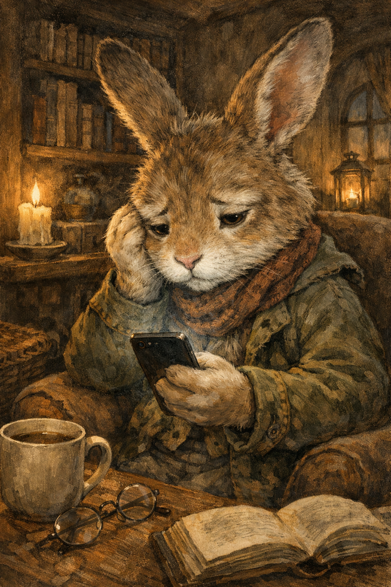

SNSに振り回されて疲れてしまう心の状態をイメージしたイラスト
SNSを使っていて、こんな感覚はありませんか？
それは単なる気のせいではなく、
👉 「いいね依存」という状態かもしれません。
投稿直後から何度もアプリを開き、「いいね増えてるかな？」と確認する。
反応が少ないと、なぜか気分が下がる。
本音ではなく、「ウケそうな内容」だけ選ぶ。
誰がいいねしたか、しなかったかを覚えている。
通知が来るたびに確認し、来ないと気になる。
反応が少ない投稿を消す。
バズ投稿やフォロワー増加を見て不安になる。
しばらく投稿しないと落ち着かない。
これらに共通するのは、
👉 自分の状態が「他人の反応」で決まっていること
いいねは次のようなものに大きく左右されます。
👉 人の価値とは無関係です
SNSは本質的に
👉 公開評価の場（半分コンテスト）
です。
👉 目的を「内側」に置く
❌ 反応が結果
⭕ 投稿が本体
👉 評価軸を自分に戻す
👉 1日2回だけ確認などルール化
これだけでも依存はかなり軽くなります。
現実で大切なのは
👉 SNSは“派手な価値”に偏った世界
この問題は、実は昔から指摘されています。
👉 マタイ6:1
「人に見せるために善いことをしないように」
👉 ヨハネ5:44
「人からの栄光ではなく、神からの評価を求める」
👉 箴言29:25
「人を恐れることは罠となる」
👉 箴言4:23
「何よりも心を守れ」
👉 テサロニケ第一4:11
「静かに生活し、自分のことに専念しなさい」
SNS疲れの核心はこれです：
👉 他人の評価軸に生きてしまうこと
👉 SNS
＝ 他人が評価する世界
👉 現実
＝ 自分が意味を決める世界
この2つを分けることができれば、SNSはもっと楽に使えるようになります。
そして聖書的に言えば、
👉 「見られるために生きる」のではなく
👉 「正しいことをして生きる」
これが、本当の安定につながります。